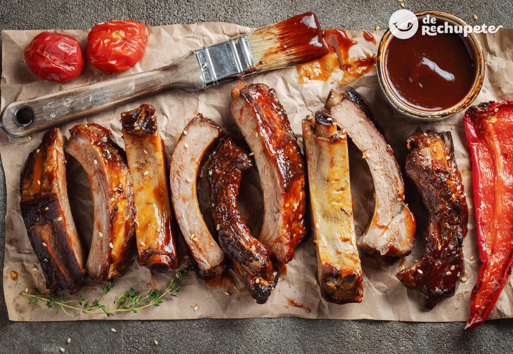

Costillas al Horno con Salsa Barbacoa

Ingredientes
- 2 tiras de costilla de cerdo (500 g. por cada tira, 1 k. aprox.)
- 250 ml. salsa barbacoa (vuestra marca preferida)
- Papel de aluminio (para cubrir las costillas)
Elaboración (Pasos)
- Sobre la bandeja de horno colocamos el papel de aluminio y encima los costillares de cerdo, uno al lado del otro.
- Vertemos la mitad de la salsa barbacoa repartiéndola bien por toda la superficie. Le damos la vuelta a las costillas y regamos con el resto de salsa repitiendo la operación. Dejamos un poquito de la salsa reservada para pincelar al final del horneado, justo antes de gratinar y dorar.
- Cerramos con papel de aluminio las costillas como si estuviéramos haciendo un paquete. Asegurándonos de que quede bien cerrado para evitar que la salsa de pueda salir durante el horneado.
- Con el horno previamente caliente a 150º C cocinamos las costillas durante 2 horas y media. Os parecerá mucho tiempo, pero la temperatura del horno es baja. Recordad que se cocinan como al papillote, en el paquete de aluminio, bien envueltas para que no se quemen. No os preocupéis no se van a pasar ni quemar. En ese tiempo las costillas ya estarán de rechupete, pero las vamos a mejorar mucho más.
- Abrimos el paquete de papel de aluminio cuando haya pasado ese tiempo y pincelamos de nuevo con el resto de la salsa que tenemos reservada.
- Volvemos a hornear con el horno en la posición grill (calor sólo arriba) a 190º C durante 16 minutos. Le damos la vuelta a mitad del tiempo, cada 8 minutos para que estén igual de doradas por los 2 lados.
- Como siempre os digo, cada horno es un mundo y vosotros el vuestro lo conocéis mucho mejor que yo. El último paso es de dorar, no vayáis a estropear las costillas al final de todo, mirad de vez en cuando y cuando estén doradas las sacamos.